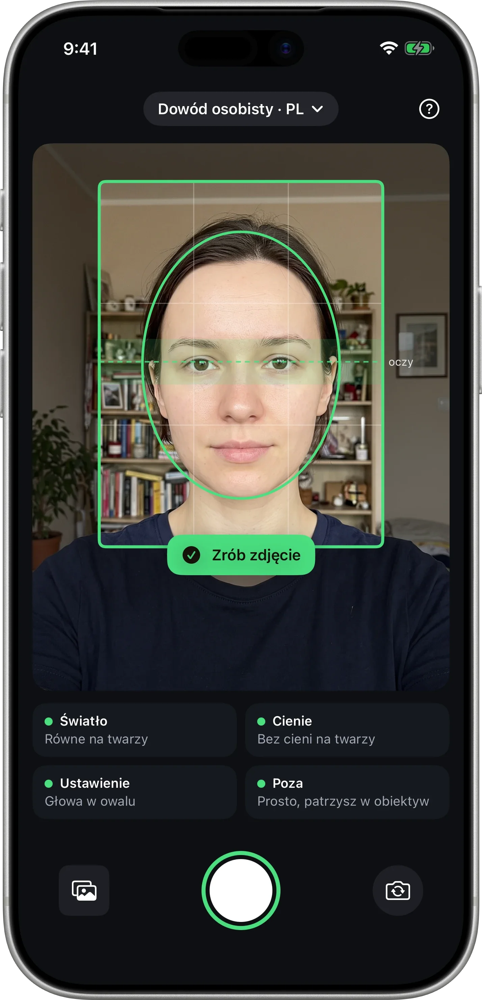
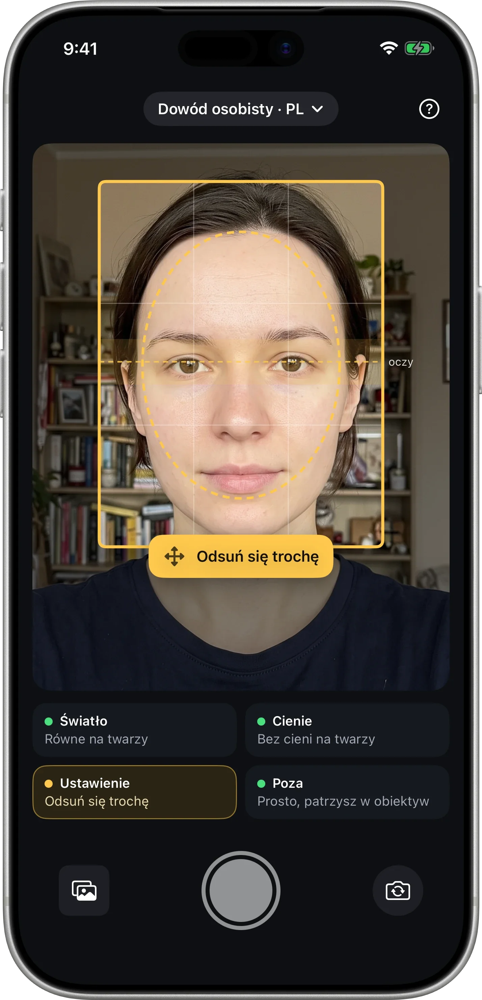
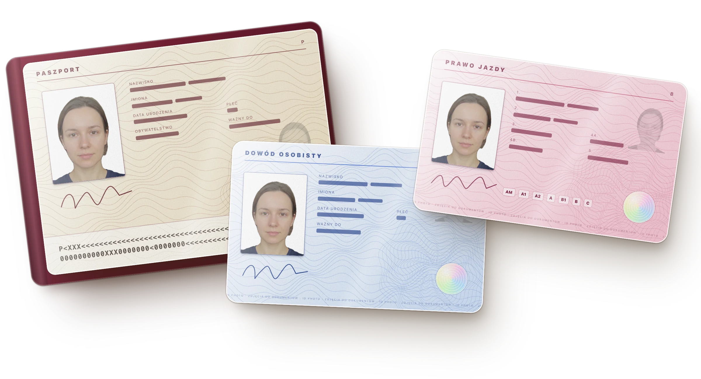
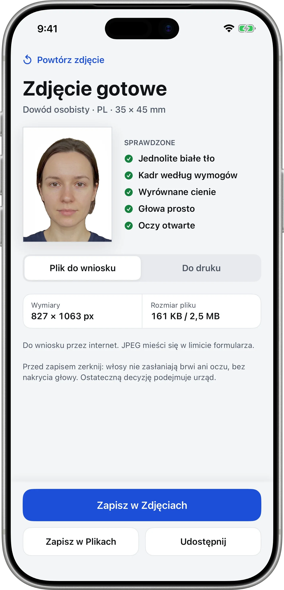
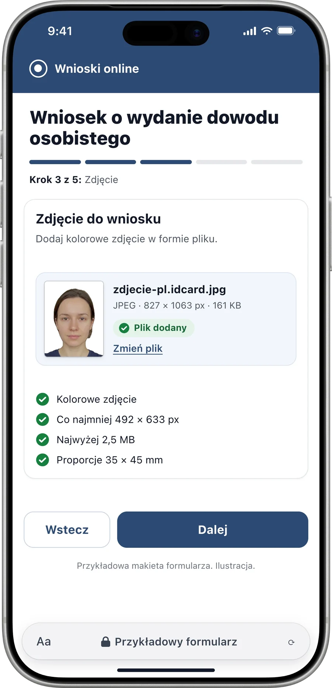
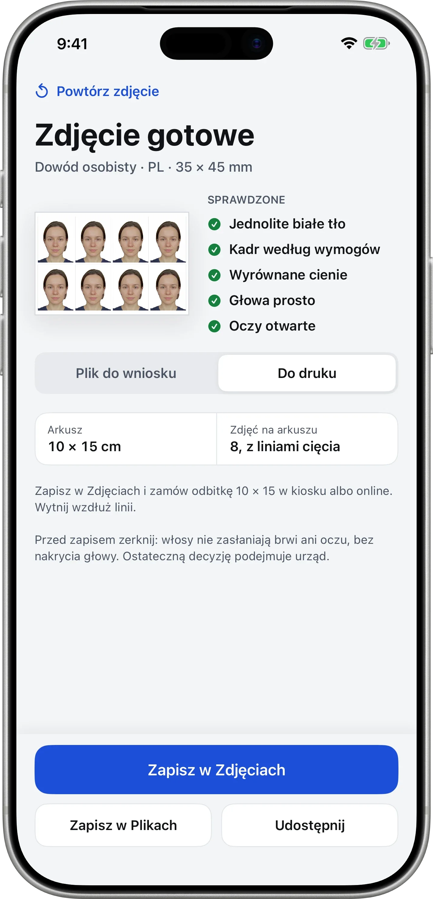

Dowód · paszport · 35 × 45 mm
Nie musisz iść do fotografa
Zdjęcie do dowodu i paszportu zrobisz telefonem w domu.
- Bez konta i bez wysyłania
- Jednorazowy zakup, bez abonamentu

Dowód · paszport · 35 × 45 mm
Oszczędź czas i pieniądze
Dojazd do zakładuKolejka i godziny otwarciaPłacenie za każdą wizytę
Telefon.Dom.Gotowe.
Zdjęcie do dowodu i paszportu zrobisz telefonem w domu.

Dowód · paszport · 35 × 45 mm
Aplikacja Cię poprowadzi
Na żywo podpowie, jak ustawić twarz, światło i pozę.
- Zielona ramka: można robić zdjęcie.
- Żółty baner: jedna rzecz do poprawy.
Dowód · paszport · 35 × 45 mm
Reszta zrobi się za Ciebie
Białe tło, kadr 35 × 45 mm i cienie ustawią się automatycznie.
- Wycinamy postać z tła
- Jednolite białe tło
- Kadr 35 × 45 mm według wymogów
- Wyrównujemy światło i cienie

Dowód · paszport · 35 × 45 mm
Zdjęcie gotowe do wniosku online i druku

Udostępnij

Do wniosku online o dowód osobisty (gov.pl albo aplikacja mObywatel) dodajesz zdjęcie jako plik: co najmniej 492 × 633 px, do 2,5 MB. Nasz plik ma 827 × 1063 px.
Dowód · paszport · 35 × 45 mm
Wydrukuj 8 zdjęć z jednej odbitki
Do paszportu i do urzędu: arkusz 10 × 15 cm z liniami cięcia.

Dowód · paszport · 35 × 45 mm
Pełna prywatność na Twoim telefonie
Wycinanie, tło i kadr liczy sam iPhone. Zdjęcie nie opuszcza telefonu.
Polityka prywatności- Obróbka na urządzeniu
- Bez konta
- Bez wysyłania
- Niczego nie przechowujemy
- Bez subskrypcji
- Jedna płatność
Zdjęcie do dokumentu zrobione w domu
iPhone z iOS 26 · jednorazowy zakup, bez abonamentu